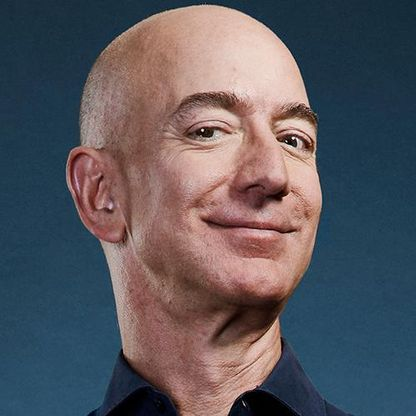

Here's a couple hundred words you'll probably skip over, but are necessary before any interactive.
Click on the billionaires below to see how they reacted to the coronavirus pandemic.
Jack Ma
Mr. Superhero
Jack Ma gave a bunch of money. Good guy!
Bill Gates
Mr. I'm trying to save you people.
Bill Gates gave a lot, lot of money. As usual. Also, he didn't engineer coronavirus to kill off half the planet, contrary to popular internet belief.
Jeff Bezos
Mr. How can this make me richer?
Jeff Bezos gave money, but also managed to come off as more evil by treating Amazon workers poorly.
Michael Bloomberg
Mr. "Guys, remember when I was running for President? No? Good.""
Michael Bloomberg disappeared after talking about how he'd do 'whatever it takes' to...get himself elected.
Charles Koch
Mr. You-No-Stay-At-Home
Who was the most surprised by an international pandemic?
Charles Koch would be a safe bet, if only because the man has spent so long trying to defund the CDC. In 2018, Koch’s Americans For Prosperity lobbied for $1 billion in cuts to the CDC. They argued the organization's funding had grown
significantly in 15 years, and that its public health services were ‘duplicative’.
When Covid-19 hit, the AFP then began advocating against stay-at-home orders across the country. In several statements, the group called the orders the “wrong approach” and that “all businesses are essential.” That advice contradicts
medical experts at the top, and yet despite that, some say that languages has found a receptive ear in the president. Trump has also publicly toyed with the idea of reopening.
At a net worth of 40 billion, Charles Koch’s influence is massive. The AFP is just one arm of his network that is mixed up in the coronavirus response. Koch industries employs over 130,000 workers. Koch also owns Georgia-Pacific, a
toilet-paper producer - sorry, “bath tissue” - among other things. It also owns Phillips Medisize, a medical device producer that makes test kits. In a statement, the company said they would be ‘transforming production lines in order to
meet the growing demand for life saving medical devices.”
So Koch is either innovating his way through an economic collapse, or simply positioning himself to hold all the cards when the federal demand for test kits soars.
One of Koch’s orgs, Stand Together, has announced that they are donating a total of $5 million dollars directly to families in sums of $500 each. It’s also donating over $5 million to community-based nonprofits.
Notably, a small amount of that pot has come from Koch’s own coffers. Most of it is raised publicly.
Recently, the AFP has broken with former tea-party groups who’ve supported shutdown protests across the country. The decision not to take part in shutdown protests was notable. Americans for Prosperity CEO Emily Seidel said she “did not
believe rejecting the advice of public health experts made sense.”
The same health experts Koch has long tried to defund.
Larry Ellison
Mr. Doctor? No, nope, never.
Larry Ellison hopped on to the Hydroxichloroquine crazy bus with Trump.
Mark Zuckerberg
Mr. Trying to be the good guy.
Mark Zuckerberg worked with Bill Gates and came off surprisingly well, for once.
Here's text that goes into what you can probably already see for yourself through the interactive above.
If you didn't want to do the clicking, then this text is for you!
This person did this notable thing. Also this one said this crazy thing. And generally, don't you wish you were a billionaire, after reading this?
To get inspired and less sad about how poor you are, check out some of our other interactives in this project. Cheers :)